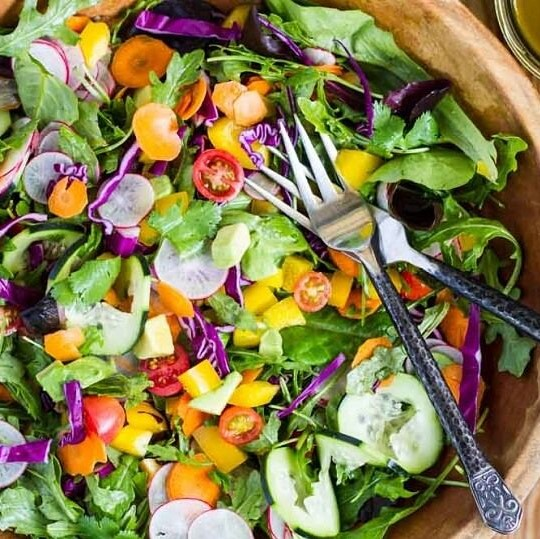

Cardápio
Angelina Jolie....................R$12,00
(Pernil, brocólis, batata, cenoura e alecrim).
Remy....................R$12,00
(Costela com farofa de panko, ervas e limão siciliano).
Adam Sandler....................R$12,00
(Filé de frango, alface roxa, catalonia, cenoura, abacate, ervilha, pimentão
vermelho
e amarelo).

Bruna Marquezine....................R$12,00
(Tomate cereja, repolho roxo, pepino, rucúla, rabanete e cenoura).
Fernanda Montenegro....................R$12,00
Moqueca de banana da terra
(banana, leite de coco, azeite de denê e pimentões.).
Elon Musk....................R$12,00
(Presunto, tomate cereja, rucúla, queijo e shoyu).

Rita Lee...................R$12,00
Lasanha à bolonhesa vegana.
(Queijo de castanhas, PTS, molho de tomate caseiro e ervas finas).